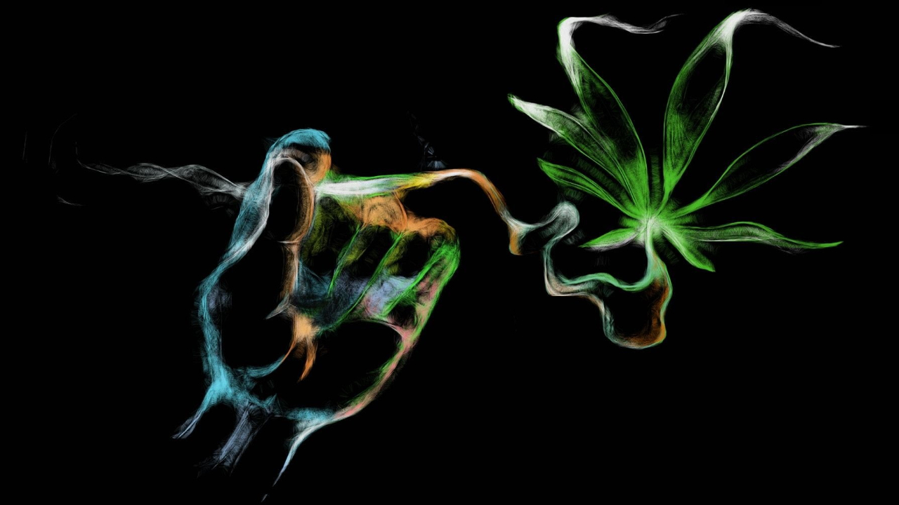

Günümüz dünyasında, tarım iki farklı temel amaç için kullanılmaktadır. Bunlardan ilki, sadece ailesini besleyebilmek için üretim yapan insanlardan oluşan grup, ikincisi ise ticari amaçla tarım yapan insanlardan ve kurumlardan oluşan gruptur. Endüstriyel tarımda, amaç ticaret olduğundan para sahası geniştir ve gübreleme, tohumlama, bakım, sulama gibi olanaklar geniştir. Aynı şekilde endüstriyel tarımda geniş tarım alanları mevcuttur. 20. yüzyılda özellikle tarım kimyasındaki gelişmeler, üretimi katladığı gibi, insan gücü oranını da düşürmüştür. Ancak bu, hem sağlıksız gıda üretimine, hem de işsizliğe neden olmaktadır.

Tarımda görülen haşaratlara karşı kullanılan ilaçlar, bu haşaratların zararlarını büyük ölçüde engellese de, buna kaşılık bu ilaçlar doğal dengeyi bozmakta ve çevreye zarar vermektedir. Tüm bu zararlara karşılık, tarımda kullanılan traktör gibi araçlar, üretimi arttırmakta ve daha çok insan için besin olanağı sağlamaktadır. Özellikle ilkel tarım aletlerinin yerini modern tarım ve sulama birimlerine bıraktığı 1900'ler boyunca tarımda ivmeli bir artış gözlenmiştir. Amerika Birleşik Devletleri'nde yer alan Ulusal Mühendislik Akademisi'ne göre, tarımdaki makineleşme, dünyanın yaşadığı 20 devrimden biridir. Yine 1999 verilerine göre, günümüz teknolojisi sayesinde, tek bir çiftçi, 130'dan fazla insanı beslemektedir.
21. yüzyıl teknolojisi sayesinde, günümüzde tarımda çeşitlilik, gen çaprazlaması sayesinde artmakta ve birkaç verimli soy birleştirilerek ortaya çok daha verimli yeni bir soy çıkarılabilmektedir. Bu da tarım üretiminin artmasının altında yer alan etmenlerden biri olarak kabul edilmektedir.